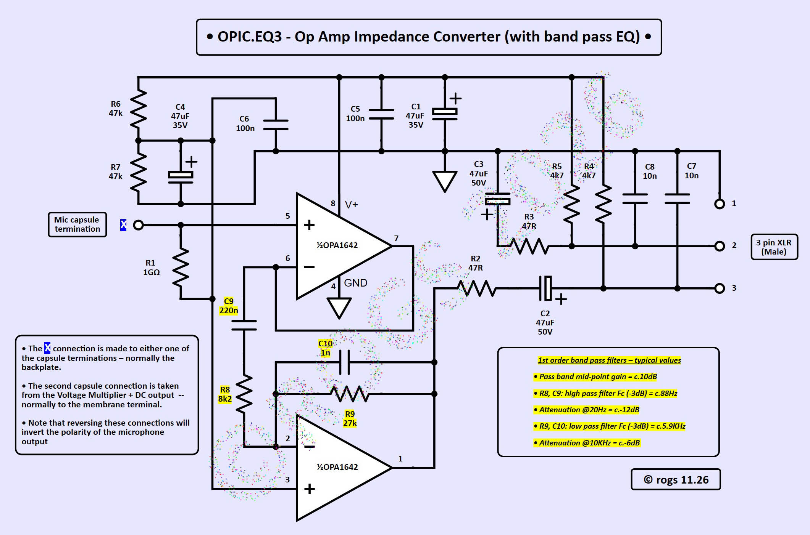
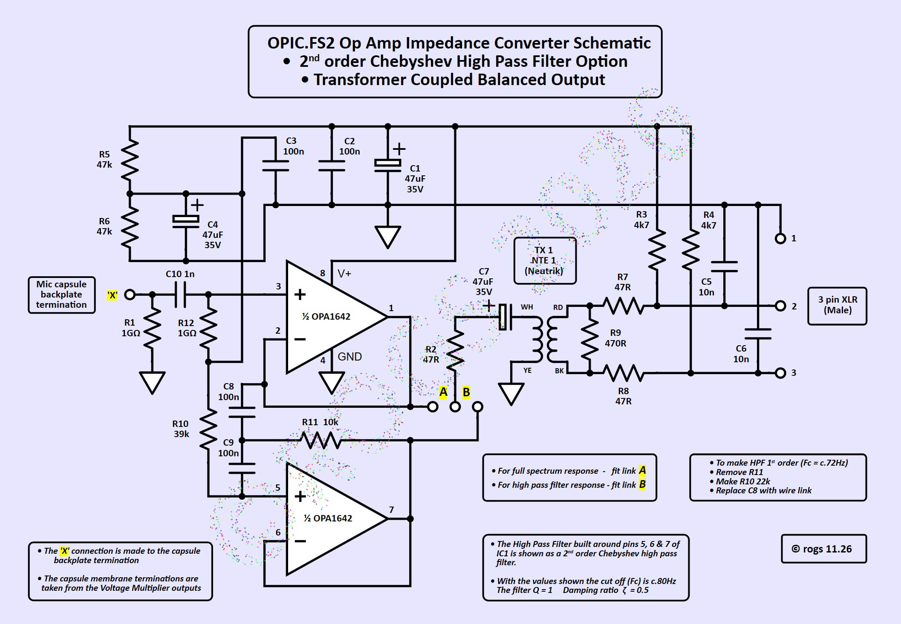

With this kind of hobby project, there will always be further ideas and revisions that develop as the project progresses. Listed here are some of the more recent project variations...
It is possible to use an LDC capsule in a basic configuration, without fitting a separate voltage multiplier for capsule polarisation.
The sensitivity will be slightly reduced (by around 3dB) when compared to the same capsule biased with 60v of polarisaton.
The OPIC.Basic circuit shown below uses the 48v phantom power to supply c.30v to the op-amp circuitry...
In addition, the non audio leg (pin3) supplies c.40v as the capsule polarisation voltage.
As there is essentially no current drawn by that high impedance capsule 'load', the system remains impedance balanced.
It's a simpler version that works well!
• Just click on the image below for a PDF of the OPIC.Basic project details •

The new EQ3 version of the OPIC project uses an OPA1642 dual op-amp, so that low and high pass filters - together with gain adjustments - are now included in the signal path.
The schematic shows component values selected to provide typical bandpass filters.
Those values can of course be varied to suit individual project requirements...
• Just click on the image below for a PDF of the OPIC.EQ3 project details •

OPIC.44 is the latest version of the standard OPIC impedance converter and voltage multiplier schematic. It is functionally identical to the original version, but uses a Hartley Oscillator as the basis of the voltage multiplier, to make it simpler to construct (fewer bits!)...
• Just click on the image below for a PDF of the OPIC.44 project details •

TX3 is a transformer coupled version of the original OPIC circuit, fitted with a Neutrik NTE 1 transformer which provides a fully balanced output.
This version also includes an optional Chebyshev 2nd order high pass input filter.
The voltage multiplier also includes an option to select a lower voltage setting, to provide a 'pad' when recording loud sources
• Just click on the image below for a PDF of the OPIC.TX3 project details •
.Schematic.jpg)
OPIC.FS2 is a version which incorporates all the 'extras' added to the project over the last couple of years...
• Designed to use a dual sided LDC capsule, and to fit into a U87 style donor body.
• A transformer coupled balanced output.
• An optional Chebyshev 2nd order high pass filter.
• A three way pattern select option - Omni, Figure of 8 or Cardioid.
• A selectable attenuation 'pad' option, the depth of which can be adjusted to suit individual requirements.
These additional functions should expand the options available to those who enjoy experimenting with OPIC ideas !
• Just click on the image below for a PDF of the OPIC.FS2 project details •
